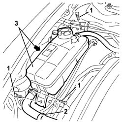
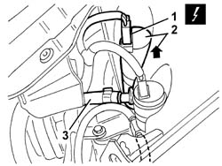

5050D20 HEADLAMP WASHER PUMP - R+R
- Path
- Procedures > 50 AUXILIARY UNITS > 5050 SCREEN WASHERS AND HEADLAMP WASH/WIPE > 5050D HEADLAMP WASH/WIPE > 5050D20 HEADLAMP WASHER PUMP - R+R
- Kind
- repair procedure (removal / refitting; the operation number is the code)
- Applies to
- engines: 2.0 JTS, 3.2 V6, 1.9 JTD 16V; all production periods
- Interactive page
- https://sloeber94.github.io/elrnDB-aGt/en/#/125001576
Applies to: engines: 2.0 JTS, 3.2 V6, 1.9 JTD 16V; all production periods
 Removing
Removing
 Refitting
RefittingOpen the bonnet lid.
Applies to: engines: 2.0 JTS, 3.2 V6, 1.9 JTD 16V; all production periods
1. Undo the bolts fixing the coolant reservoir.
2. Open the retaining band.
3. Move the coolant reservoir.

Applies to: engines: 2.0 JTS, 3.2 V6, 1.9 JTD 16V; all production periods
Position a suitable container for collecting the windscreen washer reservoir fluid.
1. Disconnect the electrical connection for the electric pump.
Name | Connector | |
|---|---|---|
1 | Headlamp washer pump motor | See N25 HEADLAMP WASHER PUMP MOTOR |
2. Remove the electric pump from the reservoir and let the fluid drain into the container.
3. Disconnect the fluid supply pipe, then recover the electric pump.

Applies to: engines: 2.0 JTS, 3.2 V6, 1.9 JTD 16V; all production periods
Refitting
RemovingCheck that the electric pump is not damaged and, if necessary, conduct an electrical test on it.
Connect the fluid supply pipe.
Fit the electric pump in the reservoir.
Connect the electrical connection to the electric pump.
Position the coolant reservoir and secure it using the bolts.
Reposition the retaining band.
Refill the windscreen washer fluid reservoir.
Applies to: engines: 2.0 JTS, 3.2 V6, 1.9 JTD 16V; all production periods
Close the bonnet lid and check the operation of the headlamp washers.
Applies to: engines: 1.9 JTD 16V; all production periods
- 7025A12 Engine front sound insulation COVER - R.R.
- 7025A14 Bonnet LID - R.R.
Applies to: engines: 1.9 JTD 16V; all production periods
- 7025A14 Bonnet LID - R.R.
- 7025A12 Engine front sound insulation COVER - R.R.